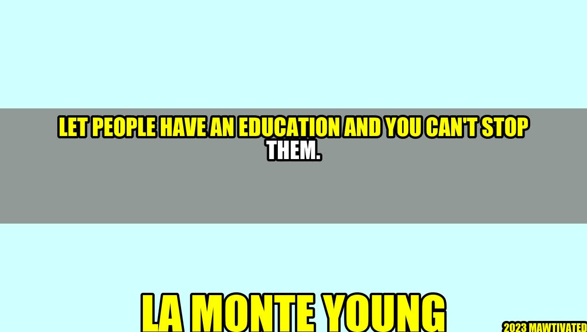

Education: Power of Knowledge

An Inspiring Story
Once there was a young girl named Maria who came from a poor family. Her parents could not afford to send her to school, but Maria had a thirst for knowledge. She walked miles every day to go to a small library located in a village nearby. She read books and taught herself how to read and write. She was determined to get an education no matter what the circumstances were. She eventually became a professor of literature and an inspiration to many.
The Importance of Education
Education is the key to unlock the door of success. It is the most powerful weapon to change the world. Education provides us with knowledge and skills that we need to survive and thrive in this world. Education gives people the power to think critically, to make informed decisions, and to be responsible citizens.
Author's Story
La Monte Young is a great example of how education can change a person's life. Born in 1935 in Idaho, Young was interested in music from a young age. He pursued his passion for music and became a composer, performer, and musician. He received his Bachelor of Arts degree from the University of California, Los Angeles and went on to study at the Watts Towers Arts Center. His education helped him to develop his unique musical style and become one of the most influential composers of the 20th century.
Examples
- Nelson Mandela, who served 27 years in prison, once said, "Education is the most powerful weapon which you can use to change the world."
- Malala Yousafzai, a Pakistani education activist who survived an assassination attempt by the Taliban and won the Nobel Peace Prize, is an example of how education can empower individuals and communities.
- Kailash Satyarthi, an Indian children's rights activist and Nobel Peace Prize winner, believes that education is the key to ending child labor and exploitation.
Conclusion
- Education is a fundamental human right and should be accessible to all.
- Education is the foundation for social, economic, and political progress.
- Education empowers individuals and communities to create a better future.
Practical Tips
- Read every day: Reading provides us with knowledge, expands our vocabulary, and improves comprehension skills.
- Join a group or club: Joining a study group or club can help you to stay motivated and on track with your studies.
- Invest in your education: Whether it's attending university, taking an online course, or attending a workshop, investing in your education can lead to a successful career.
Hashtags
- #education
- #knowledgeispower
- #neverstoplearning
SEO Keywords
- education
- knowledge
- empowerment
- success
Article Category
This article falls under the category of education and self-improvement.
Curated by Team Akash.Mittal.Blog
Curated by Team Akash.Mittal.Blog
Share on Twitter Share on LinkedIn